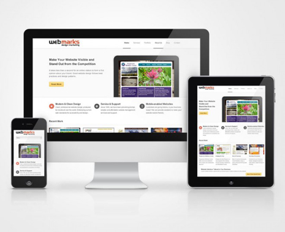

LUPA VIZUAL
studio creativ

|
In viziunea noastra un WEBSITE
reusit ar trebui sa indeplineasca urmatoarele
caracteristici: - sa devina profitabil in cel mai scurt timp (si sa atraga cat mai multi vizitatori); - sa fie original, memorabil, atractiv si sa va plaseze intr-o lumina favorabila in mediul online; - sa fie usor de actualizat, utilizand un sistem de administrare simplu si prietenos; - sa se incarce rapid si sa fie compatibil cu majoritatea browserelor de pe internet; - sa fie valid din punct de vedere tehnic (sa respecte standardele web W3C); - sa fie optimizat pentru motoarele de cautare de pe internet. Un website reusit ar trebui sa creasca notoritatea obiectivului promovat, sa fie suficient de vizibil si adresabil astfel incat in scurt timp sa aduca vizitatori si profit, de aceea ar trebui sa fie realizat intr-un mod cat mai profesional. |
 |
|
Pentru ca intelegem perfect toate acestea si pentru ca avem experienta si talentul necesar, realizam website-uri de calitate ce identifica tinta afacerii si orienteaza strategia de marketing intr-o directie corecta. |
|